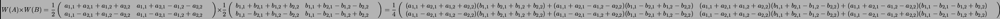
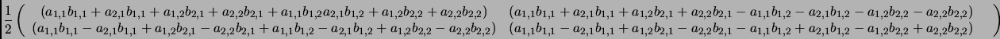
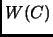
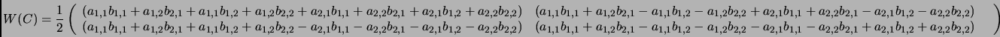

Next: Proof of Wavelet Matrix
Up: A example
Previous: Product of A and
Straight forward multiplication of
 works out as follows:
works out as follows:

Of course this is better simplified.

Compared with  computed the conventional way:

Notice that
 , in the case of
, in the case of  matrices.
matrices.
Daniel Beatty
2003-06-03